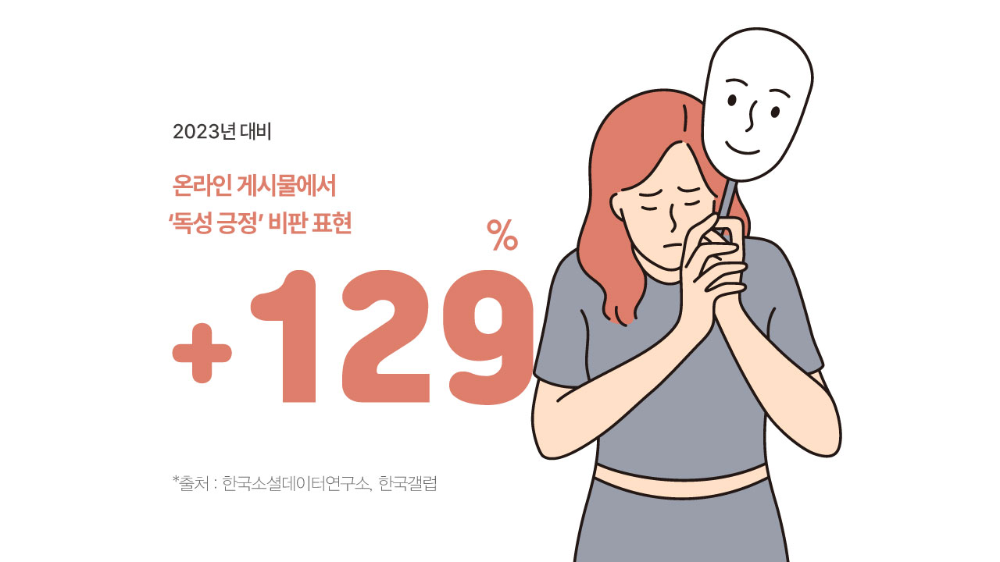
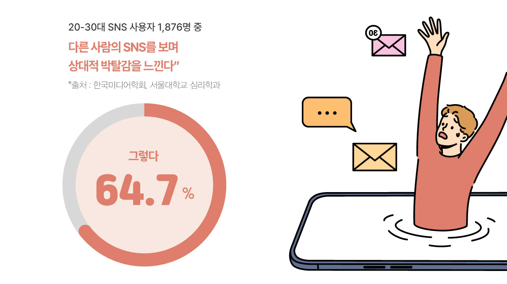
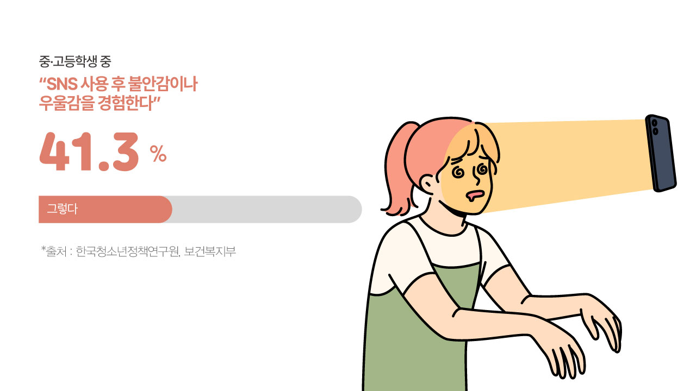
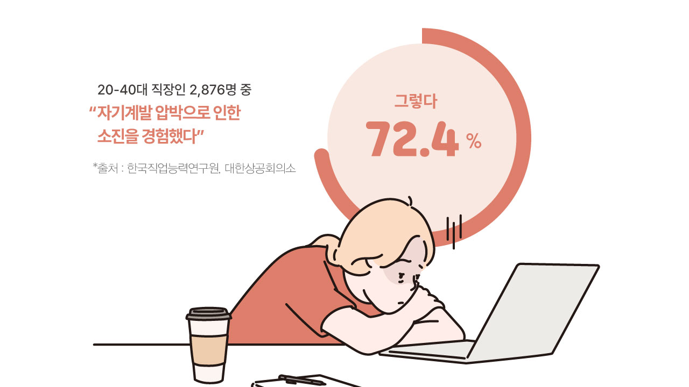

행복해 보이는 사진 뒤에 숨은 불안, 성공 스토리 속 번아웃의 그림자.
최근 3년간 정신건강 관련 지표들이 급격히 악화되고 있다. 청소년 10명
중 4명이 SNS 사용 후 우울감을 호소하고,
직장인의 72%가 자기계발 압박에 시달린다. 숫자로 드러난 대한민국의
감정 불균형 실태를 들여다본다.

‘긍정만이 정답’이란 압박감이 사회 전반에 퍼지면서 독성 긍정에 대한 경계심도 함께 커지고 있다. 한국소셜데이터연구소의 2024년 조사에 따르면 ‘독성 긍정’ 관련 키워드 언급량은 2023년 대비 68% 증가했다. 특히 ‘긍정 강요’, ‘힐링 강박’, ‘성공 집착’과 같은 키워드는 전년 대비 83%나 급증했다. 온라인 게시물에서 ‘독성 긍정’ 비판 표현은 2023년 대비 129% 늘어나 과도한 긍정주의에 대한 사회적 반감이 커지고 있음을 보여준다. 한국갤럽의 2025년 조사에서는 응답자의 76%가 “사회적으로 항상 긍정적이어야 한다는 압박을 느낀다”고 답했으며, 이 중 82%는 이러한 압박이 “정신건강에 부정적 영향을 미친다”고 응답했다.

SNS에서 보여지는 남의 행복은 실제보다 항상 더 빛나고, 내 현실은 초라해 보인다. 한국미디어학회의 2024년 연구에 따르면, 20-30대 SNS 사용자 1,876명 중 64.7%가 “다른 사람의 SNS를 보며 상대적 박탈감을 느낀다”고 응답했다. 이는 2022년(52.3%)보다 12.4%p 증가한 수치다. 또한 응답자의 58.2%는 “자신의 SNS에 부정적인 내용을 올리기 꺼린다”고 답했으며, 그 이유로 “타인의 시선과 평가에 대한 우려(73.1%)”를 꼽았다. 서울대학교 심리학과 연구팀의 조사에서는, SNS에서 ‘완벽주의 콘텐츠’ 노출시간과 불안·우울 지수 사이에 0.67의 강한 양의 상관관계가 발견되었다. 특히 주 7시간 이상 SNS를 사용하는 집단에서는 자기 비교 성향이 42% 더 높게 나타났다.

디지털 세대 청소년들에게 SNS는 떼려야 뗄 수 없는 콘텐츠로서 정신건강의 위험 요소가 되고 있다. 한국청소년정책연구원의 2024년 조사에 따르면, 13-19세 청소년 3,214명 중 일일 SNS 이용 시간이 3시간 이상인 비율이 69.3%로, 2022년(56.8%)보다 12.5%p 증가했다. 이 중 78.2%가 “SNS에서 타인의 모습과 자신을 비교한다”고 응답했다. 질병관리청의 2022년 청소년건강행태조사에서는 우울감 경험률이 남학생 24.2%, 여학생 33.5%로 나타났으며, 전년 대비 증가 추세를 보였다. 교육부와 보건복지부의 2025년 공동 연구에서는 중고등학생의 41.3%가 “SNS 사용 후 불안감이나 우울감을 경험한다”고 응답했다. 특히 SNS 사용시간이 많은 청소년 그룹의 자해 생각 경험률은 21.7%로, 사용시간이 적은 그룹(9.3%)보다 2.3배 높게 나타났다.

자기계발과 긍정적 사고를 통한 성장이라는 약속은 현실에선 번아웃과 소진으로 이어지고 있다. 한국직업능력연구원의 2024년 ‘직장인 번아웃 실태조사’에 따르면, 20-40대 직장인 2,876명 중 72.4%가 “자기계발 압박으로 인한 소진을 경험했다”고 응답했다. 이는 2022년(63.8%)보다 8.6%p 증가한 수치다. 대한상공회의소의 2025년 조사에서는 81.2%가 “회사에서 끊임없는 자기계발과 긍정적 태도를 요구받는다”고 답했으며, 이 중 76.7%는 “이러한 요구가 과도한 스트레스와 불안감을 유발한다”고 응답했다. 한국노동연구원 분석에 따르면, 자기계발 시간이 주당 10시간 이상인 직장인은 그렇지 않은 그룹보다 번아웃 지수가 38% 높게 측정되었으며, “항상 긍정적이어야 한다”는 직장 분위기가 강할수록 직무 만족도는 오히려 감소하는 현상이 발견되었다.